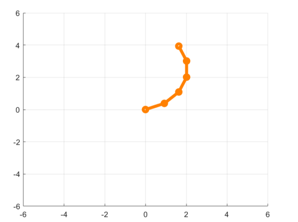
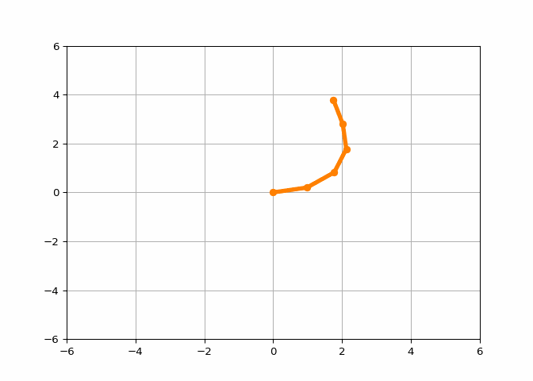
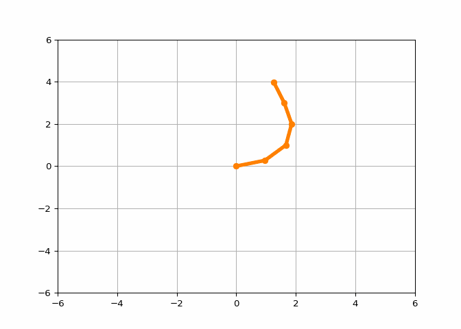
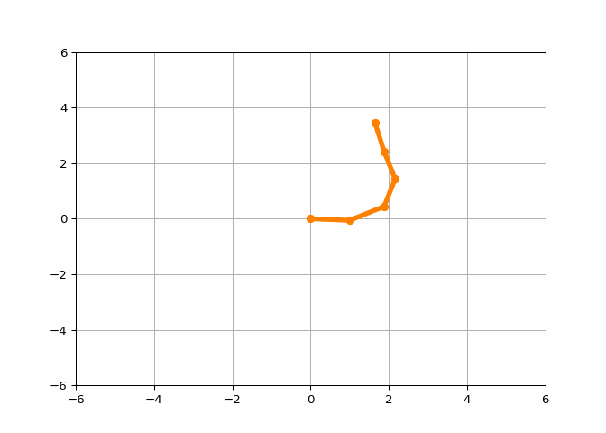

We are building a snake robot. This snake robot moves in a plane and has 5 joints, making it a redundant robot. We are using this redundancy to mimic the motion of real snakes.
Leaving \(\normalsize 𝑏 = 0\) within the Jacobian pseudoinverse. Implementing the numerical inverse kinematics algorithm to find the inverse kinematics solutions when:

Plot of the snake robot in its initial position 𝜃 = [𝜋/8, 𝜋/8, 𝜋/8, 𝜋/8, 𝜋/8]’
Case 1: 𝐿 = 1 and the desired end-effector pose is:
At each iteration we first plot the robot and save a video frame. Then we calculate the Jacobian and perform numerical inverse kinematics. The loop terminates when the actual pose is close to the desired pose.
MATLAB implementation
closeallclearclc% create figurefigureaxis([-6,6,-6,6])gridonholdon% save as a video filev=VideoWriter('Inverse_Kinematics_1.mp4','MPEG-4');v.FrameRate=25;open(v);% initial joint valuesL=1;theta= [pi/8;pi/8;pi/8;pi/8;pi/8];S1= [001000]';S2= [0010-1*L0]';S3= [0010-2*L0]';S4= [0010-3*L0]';S5= [0010-4*L0]';S_eq= [S1,S2,S3,S4,S5];M= [eye(3), [5*L;0;0];0001];M1= [eye(3), [1*L;0;0];0001];M2= [eye(3), [2*L;0;0];0001];M3= [eye(3), [3*L;0;0];0001];M4= [eye(3), [4*L;0;0];0001];% Given desired Transformation matrices T_dT_d= [rotz(pi/4), [3;2;0];0001];Xd= [r2axisangle(T_d(1:3,1:3));T_d(1:3,4)];% T with initial joint positionsT=fk(M,S_eq,theta);X= [r2axisangle(T(1:3,1:3));T(1:3,4)];whilenorm(Xd-X) >1e-2p0= [0;0];% plot the robotT1=fk(M1,S1,theta(1));% 1. get the position of each linkT2=fk(M2, [S1,S2], [theta(1),theta(2)]);T3=fk(M3, [S1,S2,S3], [theta(1),theta(2),theta(3)]);T4=fk(M4, [S1,S2,S3,S4], [theta(1),theta(2),theta(3),theta(4)]);P_v= [p0,T1(1:2,4),T2(1:2,4),T3(1:2,4),T4(1:2,4),T(1:2,4)];cla;% 2. draw the robot and save the frameplot(P_v(1,:),P_v(2,:),'o-','color',[1,0.5,0],'linewidth',4)drawnowframe=getframe(gcf);writeVideo(v,frame);% My Implementation for inverse kinematics calculation belowJS=JacS(S_eq,theta);% Updated Space JacobianJb=adjointM(inv(T))*JS;%Updated Body JacobianJ= [T(1:3,1:3) zeros(3);zeros(3) T(1:3,1:3)] *Jb;% Updated Geometric JacobianV=Xd-X;delta_theta=pinv(J)*V+(eye(5) -pinv(J)*J)*[0;0;0;0;0];theta=double(theta+0.1*delta_theta);% Updating theta until the while loop is satisfied to get the desired joint positionsT=fk(M,S_eq,theta);X= [r2axisangle(T(1:3,1:3));T(1:3,4)];endclose(v);closeall
Result:

Case 2: 𝐿 = 1 and the desired end-effector pose is:
closeallclearclc% create figurefigureaxis([-6,6,-6,6])gridonholdon% save as a video filev=VideoWriter('Inverse_Kinematics_2.mp4','MPEG-4');v.FrameRate=25;open(v);% initial joint valuesL=1;theta= [pi/8;pi/8;pi/8;pi/8;pi/8];S1= [001000]';S2= [0010-1*L0]';S3= [0010-2*L0]';S4= [0010-3*L0]';S5= [0010-4*L0]';S_eq= [S1,S2,S3,S4,S5];M= [eye(3), [5*L;0;0];0001];M1= [eye(3), [1*L;0;0];0001];M2= [eye(3), [2*L;0;0];0001];M3= [eye(3), [3*L;0;0];0001];M4= [eye(3), [4*L;0;0];0001];% Given desired Transformation matrices T_dT_d= [rotz(pi/4), [-2;4;0];0001];Xd= [r2axisangle(T_d(1:3,1:3));T_d(1:3,4)];% T with initial joint positionsT=fk(M,S_eq,theta);X= [r2axisangle(T(1:3,1:3));T(1:3,4)];whilenorm(Xd-X) >1e-2p0= [0;0];% plot the robotT1=fk(M1,S1,theta(1));% 1. get the position of each linkT2=fk(M2, [S1,S2], [theta(1),theta(2)]);T3=fk(M3, [S1,S2,S3], [theta(1),theta(2),theta(3)]);T4=fk(M4, [S1,S2,S3,S4], [theta(1),theta(2),theta(3),theta(4)]);P_v= [p0,T1(1:2,4),T2(1:2,4),T3(1:2,4),T4(1:2,4),T(1:2,4)];cla;% 2. draw the robot and save the frameplot(P_v(1,:),P_v(2,:),'o-','color',[1,0.5,0],'linewidth',4)drawnowframe=getframe(gcf);writeVideo(v,frame);% My Implementation for inverse kinematics calculation belowJS=JacS(S_eq,theta);% Updated Space JacobianJb=adjointM(inv(T))*JS;%Updated Body JacobianJ= [T(1:3,1:3) zeros(3);zeros(3) T(1:3,1:3)] *Jb;% Updated Geometric JacobianV=Xd-X;delta_theta=pinv(J)*V+(eye(5) -pinv(J)*J)*[0;0;0;0;0];theta=double(theta+0.1*delta_theta);% Updating theta until the while loop is satisfied to get the desired joint positionsT=fk(M,S_eq,theta);X= [r2axisangle(T(1:3,1:3));T(1:3,4)];endclose(v);closeall
Result:

Case 3: 𝐿 = 1 and the desired end-effector pose is:
closeallclearclc% create figurefigureaxis([-6,6,-6,6])gridonholdon% save as a video filev=VideoWriter('Inverse_Kinematics_3.mp4','MPEG-4');v.FrameRate=25;open(v);% initial joint valuesL=1;theta= [pi/8;pi/8;pi/8;pi/8;pi/8];S1= [001000]';S2= [0010-1*L0]';S3= [0010-2*L0]';S4= [0010-3*L0]';S5= [0010-4*L0]';S_eq= [S1,S2,S3,S4,S5];M= [eye(3), [5*L;0;0];0001];M1= [eye(3), [1*L;0;0];0001];M2= [eye(3), [2*L;0;0];0001];M3= [eye(3), [3*L;0;0];0001];M4= [eye(3), [4*L;0;0];0001];% Given desired Transformation matrices T_dT_d= [rotz(0), [3;-1;0];0001];Xd= [r2axisangle(T_d(1:3,1:3));T_d(1:3,4)];% T with initial joint positionsT=fk(M,S_eq,theta);X= [r2axisangle(T(1:3,1:3));T(1:3,4)];whilenorm(Xd-X) >1e-2p0= [0;0];% plot the robotT1=fk(M1,S1,theta(1));% 1. get the position of each linkT2=fk(M2, [S1,S2], [theta(1),theta(2)]);T3=fk(M3, [S1,S2,S3], [theta(1),theta(2),theta(3)]);T4=fk(M4, [S1,S2,S3,S4], [theta(1),theta(2),theta(3),theta(4)]);P_v= [p0,T1(1:2,4),T2(1:2,4),T3(1:2,4),T4(1:2,4),T(1:2,4)];cla;% 2. draw the robot and save the frameplot(P_v(1,:),P_v(2,:),'o-','color',[1,0.5,0],'linewidth',4)drawnowframe=getframe(gcf);writeVideo(v,frame);% My Implementation for inverse kinematics calculation belowJS=JacS(S_eq,theta);% Updated Space JacobianJb=adjointM(inv(T))*JS;%Updated Body JacobianJ= [T(1:3,1:3) zeros(3);zeros(3) T(1:3,1:3)] *Jb;% Updated Geometric JacobianV=Xd-X;delta_theta=pinv(J)*V+(eye(5) -pinv(J)*J)*[0;0;0;0;0];theta=double(theta+0.1*delta_theta);% Updating theta until the while loop is satisfied to get the desired joint positionsT=fk(M,S_eq,theta);X= [r2axisangle(T(1:3,1:3));T(1:3,4)];endclose(v);closeall
Result:
Jacobian Pseudoinverse and Redundancy
This problem continues exploring the redundant snake robot used simulated above. So far we have left \(\normalsize 𝑏 = 0\) in our Jacobian pseudoinverse. More generally, choosing \(\normalsize 𝑏\) allows us to set a secondary objective for the inverse kinematics of redundant robots.
Here we establish that numerical inverse kinematics finds a solution for \(\normalsize \theta\) such that \(\normalsize T_{sb}(\theta)\) equals the desired end-effector pose. But when working with redundant robots, multiple solutions are often possible. Choosing \(\normalsize 𝑏\) affects which of these solutions the algorithm selects.
Now I set \(\normalsize 𝑏\) as the following vector (and update \(\normalsize 𝑏\) as \(\normalsize \theta_1\) changes):
closeallclearclc% create figurefigureaxis([-6,6,-6,6])gridonholdon% save as a video filev=VideoWriter('Inverse_Kinematics_3_null_space.mp4','MPEG-4');v.FrameRate=25;open(v);% initial joint valuesL=1;theta= [pi/8;pi/8;pi/8;pi/8;pi/8];S1= [001000]';S2= [0010-1*L0]';S3= [0010-2*L0]';S4= [0010-3*L0]';S5= [0010-4*L0]';S_eq= [S1,S2,S3,S4,S5];M= [eye(3), [5*L;0;0];0001];M1= [eye(3), [1*L;0;0];0001];M2= [eye(3), [2*L;0;0];0001];M3= [eye(3), [3*L;0;0];0001];M4= [eye(3), [4*L;0;0];0001];% Given desired Transformation matrices T_dT_d= [rotz(0), [3;-1;0];0001];Xd= [r2axisangle(T_d(1:3,1:3));T_d(1:3,4)];% T with initial joint positionsT=fk(M,S_eq,theta);X= [r2axisangle(T(1:3,1:3));T(1:3,4)];whilenorm(Xd-X) >1e-2p0= [0;0];% plot the robotT1=fk(M1,S1,theta(1));% 1. get the position of each linkT2=fk(M2, [S1,S2], [theta(1),theta(2)]);T3=fk(M3, [S1,S2,S3], [theta(1),theta(2),theta(3)]);T4=fk(M4, [S1,S2,S3,S4], [theta(1),theta(2),theta(3),theta(4)]);P_v= [p0,T1(1:2,4),T2(1:2,4),T3(1:2,4),T4(1:2,4),T(1:2,4)];cla;% 2. draw the robot and save the frameplot(P_v(1,:),P_v(2,:),'o-','color',[1,0.5,0],'linewidth',4)drawnowframe=getframe(gcf);writeVideo(v,frame);% My Implementation for inverse kinematics calculation belowJS=JacS(S_eq,theta);% Updated Space JacobianJb=adjointM(inv(T))*JS;%Updated Body JacobianJ= [T(1:3,1:3) zeros(3);zeros(3) T(1:3,1:3)] *Jb;% Updated Geometric JacobianV=Xd-X;delta_theta=pinv(J)*V+(eye(5) -pinv(J)*J)*[-theta(1);0;0;0;0];theta=double(theta+0.1*delta_theta);% Updating theta until the while loop is satisfied to get the desired joint positionsT=fk(M,S_eq,theta);X= [r2axisangle(T(1:3,1:3));T(1:3,4)];endclose(v);closeall
Result:

The final joint positions (approximately):
Case 3 with \(\normalsize 𝑏 = 0\):\[\normalsize \theta = \left(\begin{array}{cc}
−1.51\\
0.29\\
1.36\\
0.78\\
−0.92
\end{array}\right)
\]
Comparing these two results, we have that |\(\normalsize \theta_1\)| is smaller (and \(\normalsize \theta_1\) is closer to zero) with the secondary objective:
\(\normalsize 0.38 < 1.51\)
There are several reasons why we may want to minimize a joint angle:
• The actuator at that joint moves more slowly than the other actuators.
• Moving the actuator at that joint consumes more power as compared to the other actuators along the robot arm.
• We want to avoid colliding with an obstacle, and we need to keep one or more joints at a specific angle to avoid that obstacle